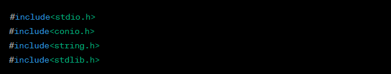
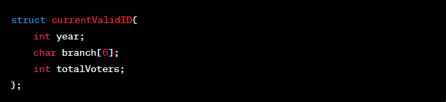
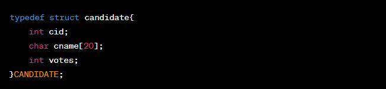
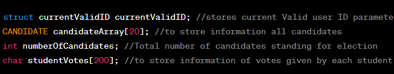
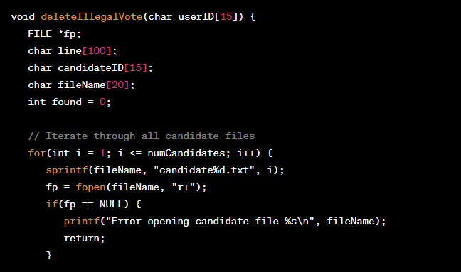
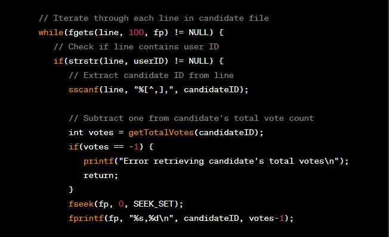
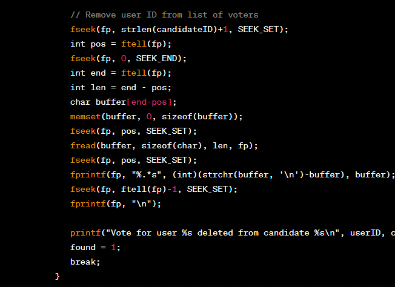
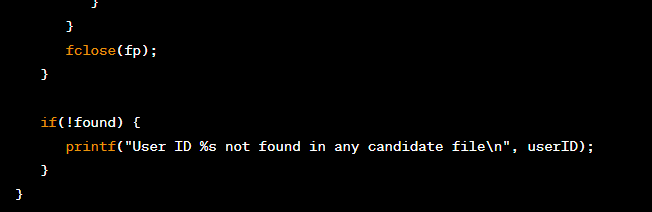
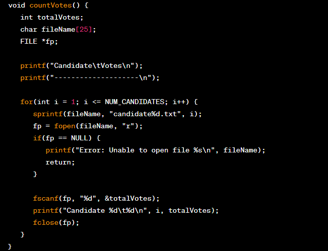

This is a C program that implements a mini voting system. Here are the main components of the program:
Tech stack: C
Code at GitHub
This is a C program that simulates an electronic voting system. The program defines various functions to perform different tasks in the election process.
The program starts by including some header files that contain various standard input/output functions in C (stdio.h), console input/output functions (conio.h), string manipulation functions (string.h), and memory allocation functions (stdlib.h).
The program defines a structure named currentValidID, which stores the current valid user ID parameters. It has three fields: year, branch, and totalVoters.
The program defines a new data type CANDIDATE using the typedef keyword. This data type is a structure that stores information about a candidate in the election. It has three fields: cid (candidate ID), cname (candidate name), and votes (number of votes received by the candidate).
The program defines some global variables that are used throughout the program. struct currentValidID stores the current valid user ID parameters. CANDIDATE candidateArray[20] is an array of CANDIDATE structures, which stores information about all candidates in the election. int numberOfCandidates stores the total number of candidates standing for the election. char studentVotes[200] is an array of characters that stores information about the votes given by each student.
The program defines some functions that are used in the election process. extractYear(char userID[15]) takes a user ID as input and extracts the year from it. It returns the year. extractRollNo(char userID[15]) takes a user ID as input and extracts the roll number from it. It returns the roll number. checkBranchCode(char userID[15]) takes a user ID as input and checks whether the branch code in the user ID matches the global branch code (currentValidID.branch). It returns 1 if the branch code matches, 0 otherwise. authenticateAdmin() takes no input and prompts the user to enter the username and password for the admin account. If the username and password match the predefined values, it returns 1 (authentication successful), 0 otherwise. banID() takes no input and creates a file named "Banned.txt". It prompts the user to enter the last roll number to ban, and any roll number entered is written to the file along with a "$" symbol in the studentVotes array at the corresponding index. createCandidateFiles() takes no input and creates a file for each candidate. It sets the initial vote count to 0 and writes the candidate name to the file. deleteIllegalVote(char userID[15]) takes a user ID as input and deletes the vote for that user from the corresponding candidate's file. It does this by subtracting one from the total votecount for the candidate in the candidate's file and removing the user's ID from the list of voters in the same file. If the user ID is not found in any candidate's file, the function returns an error message. Here is an example implementation of the deleteIllegalVote function:
   This implementation first iterates through all candidate files to find the file that contains the user's vote. It then iterates through each line in that file to find the line that contains the user's ID. Once the line is found, the candidate ID is extracted from the line using the sscanf function. The implementation then retrieves the candidate's total vote count using the getTotalVotes function and subtracts one from it. It updates the candidate's total vote count in the file using fseek and fprintf. The implementation then removes the user's ID from the list of voters in the same file. It does this by using fseek and fread to read the remaining text in the file after the user's ID, and then using fprintf to overwrite the line containing the user's ID with the remaining text. Finally, it appends a newline character to the end of the file to ensure proper file formatting. If the user ID is not found in any candidate's file, the implementation prints an error message. Otherwise, it prints a message indicating that the user's vote has been deleted from the candidate's file.
countVotes() function counts the number of votes for each candidate and displays the result. It reads the candidate files one by one, calculates the total number of votes for each candidate, and then displays the result. Here's an example implementation of the countVotes() function:
This function first initializes a variable totalVotes to hold the total number of votes for each candidate. It then loops through each candidate file, reads the first integer (which represents the total number of votes for that candidate), and prints out the candidate number and their total number of votes. Note that this function assumes that each candidate file is named candidateX.txt, where X is the candidate number. If your program uses a different naming convention, you'll need to modify the sprintf statement accordingly. With these four functions in place, you should have a basic vote counting program that can read in votes from a text file, add them to the corresponding candidate files, delete illegal votes, and display the total number of votes for each candidate.